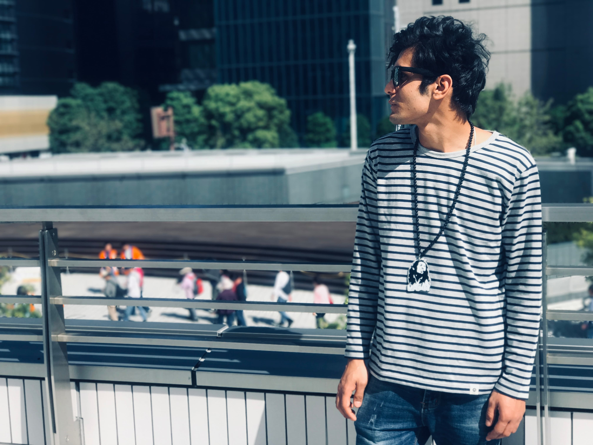

Stepping Into Another World
The moment the aircraft began descending, I looked through the window expecting to see another city. Instead, I found myself staring at an airport surrounded completely by the sea. I couldn't believe what I was seeing. Before I had even stepped into Japan, the country had already surprised me — I had never imagined that an international airport could exist on an artificial island in the middle of the ocean.
When the aircraft finally came to a stop at Chubu Centrair International Airport, I quietly took a deep breath. After travelling thousands of kilometres from Nepal, I had finally arrived. The journey I had dreamed about for years had become reality. Yet deep inside I knew that reaching Japan was not the end of my journey — it was only the beginning.
Walking through the airport felt almost unreal. Everything looked clean. Everything was organised. People moved calmly without rushing. Although I couldn't understand the language around me, I felt a strange sense of peace. For the first time in my life, I realised how different another country could feel. Every sign, every announcement, every face reminded me that I was no longer in Nepal — I had entered a completely different world. Instead of feeling frightened, I felt curious. I wanted to understand and experience everything this new country had to offer.

After collecting my luggage and completing immigration, I walked through the arrival gate. Waiting outside was my friend who had kindly come to welcome me. The moment I saw a familiar face, the nervousness that had followed me throughout the journey slowly disappeared — for the first time since leaving home, I no longer felt completely alone. Together we walked towards the railway station inside the airport, and it was also my first experience using a Japanese train. Everything looked modern and incredibly organised. The trains arrived exactly on time, passengers quietly waited in lines, nobody pushed, and nobody shouted. The calm atmosphere amazed me.
As the train slowly left the airport, I sat beside the window without saying very much. I simply watched. Outside, Japan slowly unfolded before my eyes — neat houses stood side by side, small rivers flowed quietly beneath bridges, and rice fields stretched across the countryside. The streets were clean, the traffic was orderly, and even the smallest neighbourhoods looked peaceful. Everything seemed to have its own rhythm, and I couldn't stop watching because I didn't want to miss a single moment of my first journey through this new country.
After about an hour, we finally arrived at my accommodation. The room was much smaller than I had imagined, but to me it represented something much greater than a place to sleep — it represented independence, responsibility, and, most importantly, the beginning of a completely new life. I quietly placed my suitcase on the floor and sat on the edge of the bed for a few minutes. Everything happened so quickly that I needed a moment to realise where I was. Just yesterday I had been surrounded by my family in Nepal; now I was sitting alone in a small room in Japan. Although I felt excited, I also felt the weight of being so far away from home.
That evening, the first thing I did was call my family. Hearing their voices instantly made me feel both happy and emotional. I wanted them to know that I had arrived safely. They wanted to know everything — how the journey was, what Japan looked like, whether I had eaten, and if everything was alright. Although thousands of kilometres separated us, hearing their voices reminded me that home was never truly far away.
During the following days, everything became a new experience: buying food from a Japanese convenience store, learning how to separate rubbish correctly, using the railway system, understanding simple Japanese phrases. Even the smallest daily task became something to learn. Sometimes I made mistakes. Sometimes I felt homesick. Sometimes I felt completely lost. But every challenge slowly became another lesson.

Looking back today, I realise that Japan changed far more than my address. It changed my way of thinking. It taught me discipline, patience, responsibility, and respect for other people. Living independently in another country forced me to grow in ways I never expected. Every difficulty made me stronger, every success gave me confidence, and every new experience became another unforgettable memory.
"Sometimes we travel across the world to discover that the greatest journey is discovering ourselves."
As the weeks turned into months and the months into years, Japan slowly transformed from a foreign country into my second home. The unfamiliar streets became familiar. The language became easier. The people became friends. The country that once felt so distant gradually became a place where I truly belonged. Looking back now, I realise that the day I arrived in Japan was not simply the beginning of my education or career — it was the beginning of a completely new version of myself.
What Japan Gave Me
- Confidence to live independently.
- The courage to step outside my comfort zone.
- A new language and culture.
- Friendships from around the world.
- Education and professional experience.
- Memories that will remain with me forever.
Journey Details
- Arrival: Chubu Centrair International Airport, Aichi, Japan
- Date: April 7, 2017
- First Destination: Nagoya City
- Transport: Airport Train